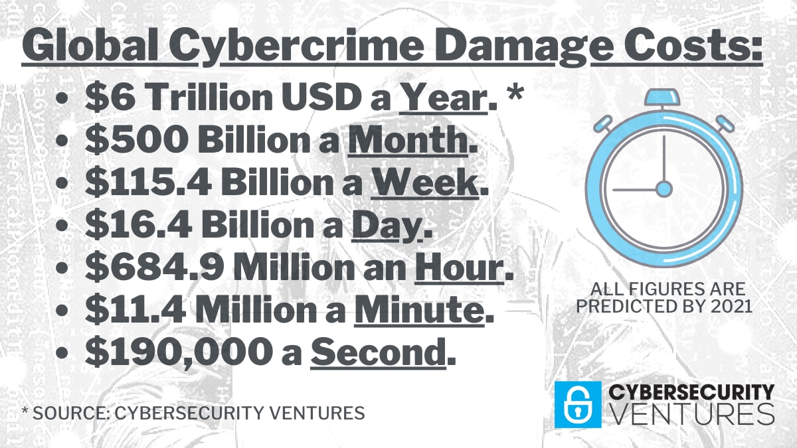

Para combater todas as ameaças cibernéticas e combater possíveis falhas de segurança, é necessário encontrar soluções de defesa do sistema e dos servidores. Há diversas formas de melhorar a segurança e de testar o sistema contra as ameaças, mesmo sem o danificar.
Por mais que a cibersegurança tenha de ser assegurada pela entidade responsável pelo sistema em questão, a verdade é que o usuário comum deve ajudar no combate às ameaças e ataques cibernéticos. Pode começar pela instrução dos usuários para um melhor uso da internet e outras tecnologias web no intuito de não serem tão facilmente expostas. O não abrir links desconhecidos ou suspeitos, não con ança em toda a informação disponível online (pois por vezes acaba por ser maliciosa), a não transferência de cheiros e aplicações sem que o seu criador ou gerenciador seja con ável e o não uso de sistemas web piratas pois com eles podem vir uma data de problemas.
As empresas de tecnologia têm um papel bastante importante no que toca à segurança tanto dos seus sistemas como dos usuários dos seus serviços. Para isto as empresas têm de implementar medidas para promover esta mesma segurança. Para isto, um dos primeiros passos pode ser o teste da sua segurança que passa por provocar um ataque aos seus próprios sistemas (usando Owasp-Zap para realizar Pen Testing para poderem proceder à deteção das suas vulnerabi- lidades para posteriormente corrigirem os seus problemas e falhas de segurança. Outra medida que podem tomar é a monitorização a tempo inteira dos seus recursos e do tráfego dos seus serviços para garantir o bom funcionamento dos mesmos (principalmente para empresas grandes) bem como a resposta rápida por parte da empresa no evento de um ataque. Outro possível método, para a proteção de dados dos usuários, é o uso de diferentes servidores para que a informação não roubada caso algum tenha problemas.
O gráfico seguinte apresenta o número de ataques cibernéticos por ano desde 2016 até à primeira metade de 2022, dados da Statista.
A imagem representa os custos atuais gastos em soluções de cibersegurança, em Dólares Americanos.
